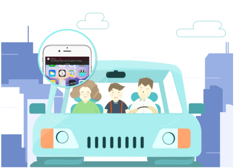

Becky's Kohl's cash will expire soon, so she decides to do some fmily shopping this weekend
Upgrade family-based shopping experience
"I have to keep an eye on her to make sure she stays in the cart." A customer told me during one of my store visits. In the same time, she was trying her best to keep her daughter quiet and safe in her cart. Based on Kohl's data, she represents about 53% of Kohl's customers who shop with kids in the store. Clearly, there is a challenge for her.
Experience Designer
Jun, 2016 - August, 2016
In-store, Tablet
Kohl's ZzzZoo is an independent design project I worked on during my internship at Kohl's headquater in Milwaukee. From ideation, UX research to wireframing prototying and presentation, it was a great opportunity to get to understand how things work in today's retail/eCommerce world.
DESIGN HIGHLIGHTS
RESEARCH INSIGHTS
In-store Shopping Experience Cannot be Simply Replaced by Online Shopping
78% of the shoppers are in-store only customers, 64% of total sales are generated by in-store only customers, 72% of sales are coming from in-store purchase.
For confidentiality reasons, only part of actual values are shared here.
Families choose Kohl's, Kohl's choose families
Over half of Kohl's customers are shopping with kids VERY OFTEN.
Kids have a huge impact on shopping experience
The only artifact they interact with is the shopping cart.
DESIGN PROCESS
Based on 6 in-store observations in 5 different stores and 11 interviews with both customers and store associates, I created a persona, Becky and her experience map to highlight my key findings in the observation.

EXPERIENCE MAP
DATA ANALYSIS
With all the data collected in the 1st round of research, I used affinity diagram and the "Elito" framework to help build my design and make key design decisions in experience flow and interaction details.
DESIGN IDEATION
I personally like to use storyboard when I need to connect all the dots in my research work and those design concepts in my mind visually, especially when it is a project need a lot of buy-ins in the early stage. I find it very helpful to bring your audience into users' daily lives and then inspire a very "iterated conversation" about how to make this in-store and off-line experience better.
TESTING & ITERATION
With RITE method, I tested out the core design flow with paper prototype, and used 4 categories within the framework: Obvious casue & solution - quick fix; Obvious casue & solution - hard fix; No obvious casue & solution; Issue due to other factors to quickly iterate and update the core design flow.
STRATEGY DESIGN
Working on this project as an intern is a very insightful experience, I was collecting a lot of valuable
feedbacks within and outside of the design team. As the interest around ZzzZoo grows, one main question was around
the business value: How much benefit/sales this design concept could bought to the company?
While it is always difficult to estimate a design's business impact in early stage, I was able to provide an estimate
of sales increase for ZzzZoo. Collaborating with the design strategy and the business data team, we carefully selected
the most updated store traffic and convertion data from 5 sample stores and came up with the estimation in a very conservative
manner.
This extra mile later proves to be necessary when I get multiple requests from different teams asking for a concept walkthrough
of this project.
VISUAL DESIGN

DESIGN WALKTHROUGH
Becky's Kohl's cash will expire soon, so she decides to do some fmily shopping this weekend
Jessy asks his mom to scan the QR code through Kohl's app so that he can continue his animal discovery journey with Kohl's ZzzZoo.
They had a great time shopping together while Jessy learned a lot about animals. This time, Jessy got an elephant which worth 12 rewards points!
Kohl's associate scans the points Jessy collected through Kohl's ZzzZoo. It saved $2.60 for them!